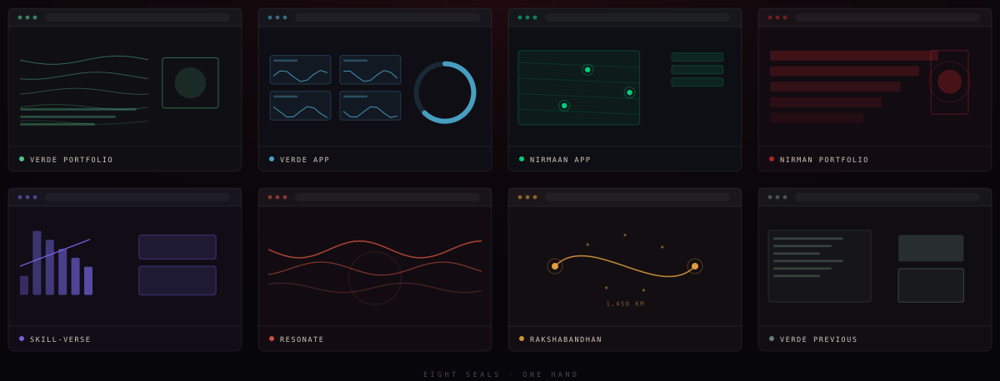
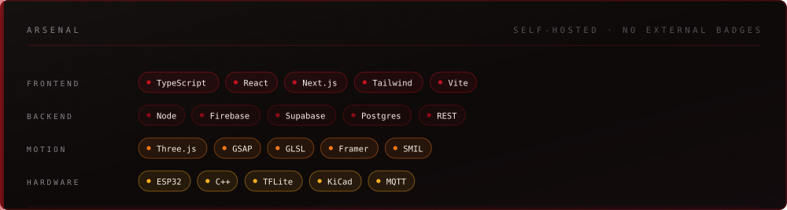

ANUJ PHULERA
SEALING CORPSINTERFACE ENGINEERGURUGRAM, INDIA
The Path · Work · Live Site · Email

⦿ The Seal
I don't chase attention. I build things that command it.
Every project here starts from the same belief: software should adapt to the person using it, not the other way round. Not a theme switcher — the structure. The layout, the hierarchy, what's available and what's hidden, decided at runtime by watching how you actually read.
A random shuffle is noise. A decided one is a signal.
⦿ Right Now

DEEP FIELD is a living atlas of the cosmos with no fixed interface. VERDE is a vertical farm that waters itself. NIRMAAN is an AI-powered e-waste pickup network for India — three roles, live routing, bookings that run end to end.
⦿ Selected Work

⦿ The Path
Interfaces that change shape are easy to make unusable. Anyone can shuffle a grid. The hard part was never the shuffling.
The hard part is earning the right to shuffle.
So DEEP FIELD only reconstructs itself when the engine has evidence — a confident read, and a clear margin over the runner-up — and never more than once every nine seconds. It shows you what changed and why. It lets you pin a structure and switch the engine off. It never loses your place.
Every project here is an argument for the same idea: adapt, but never at the cost of trust.
⦿ Attribute Sheet

⦿ Arsenal

⦿ Run It
Every repo here runs with the same three commands. No build servers, no Docker, no ceremony.
npm install
cp .env.example .env.local # VERDE APP and NIRMAAN APP only
npm run dev # → http://localhost:3000DEEP FIELD and CommitQuest need nothing at all — one is Vite, the other is plain files you can open directly.
⦿ Contact
Open an issue on any repo, or reach me directly — I answer both.

Repositories · DEEP FIELD · Email · Discord